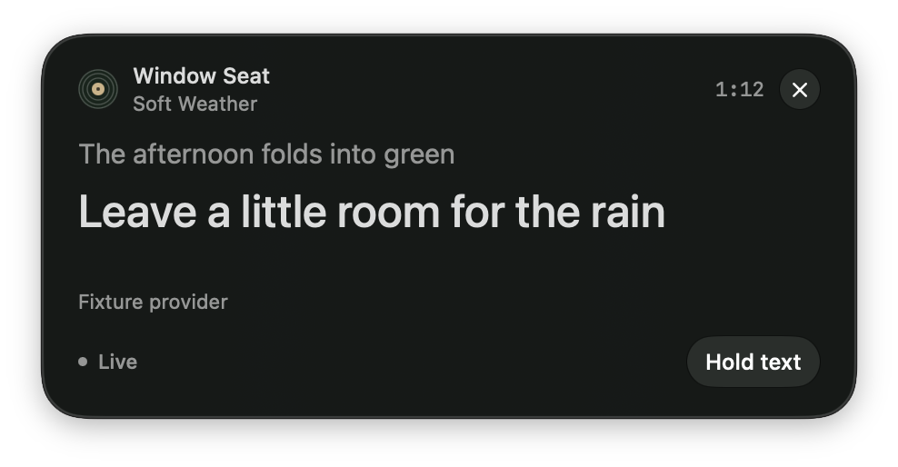

Window SeatSoft Weather
bopify
Lyric ribbon · visual study 02Give the words a home.
Three distinct ways to bring the record player’s character into the lyrics. Charcoal for reading, ivory for the words, a little warmth at the edges. Shown at actual CSS size; each can hold its own passage.
Simulated song · 1:12 · no audio
01 / Record sleeve
Part of the player.Recommended
A record peeks out of a compact sleeve. The artwork lives in the label; its muted colour reaches the spine. One clear lyric field replaces the stack of status rows.
476px overall · 448px reading surface
Closest to Bopify’s existing silhouette. The small record adds identity at the cost of a little extra width.
Window SeatSoft Weather
02 / Broadcast strip
A quieter instrument.
A distinct identity rail and a small brass cue mark. Compact, precise, and closer to a piece of audio equipment than a floating notification.
540px wide · roughly 175px tall
Less vertical presence, more desktop width. At 320px, long lyrics require more scrolling.
Window SeatSoft Weather
03 / Liner note
Words worth keeping.
A bookish serif gives the lyric a different voice from the system UI. A warm spine and fine rules suggest a printed insert without paper textures or ornament.
420px wide · roughly 225px tall
The strongest typographic departure, with more vertical presence. Needs native multilingual font-fallback review.
Compare with the current native ribbon

Interactive art-direction studies, not the shipped native UI. Original sample words and artwork. Browser glass approximates the proposed controls; native controls would use SwiftUI’s system material. Cue changes are manually triggered, with no invented word timing. Hold freezes the displayed words while the simulated song advances; Back to live catches up. Narrow previews scroll long text within a stable reading area.